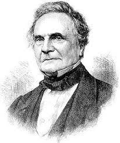
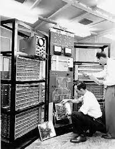
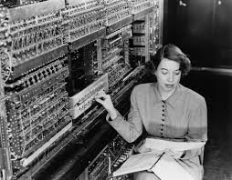
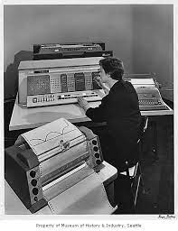
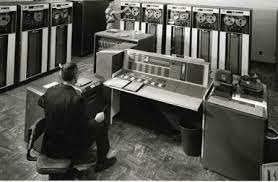
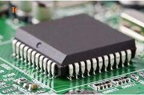

MILESTONES IN COMPUTER ARCHITECTURE
welcome!! all computer generation applications and there history are here.....
main topic > home > all gen.
father of computer

charles Babbage
who was he??
-mechanical engineer
-mathematician
-inventor
-philosopher
more about Babbage
seeds of computer: (introduction)
Hundreds of different kinds of computers have been designed and built during the evolution of the modern
digital
computer. Most have been long forgotten, but a few have had a significant impact on modern ideas. In this
section we will give a brief sketch of some of the key historical developments in order to get a better un-
derstanding of how we got where we are now. Needless to say, this section only touches on the highlights and
leaves many stones unturned. Figure 1-4 lists some of the milestone machines to be discussed in this
section.
Slater (1987) is a good place to look for additional historical material on the people who founded the com-
puter age. For short biographies and beautiful color photographs by Louis Fabian
Bachrach of some of the key people who founded the computer age, see Morgan's coffee-table book (1997).
click the generation
to
go>>
The Zeroth Generation-Mechanical Computers (1642-1945)
The first person to build a working calculating machine was the French scien- tist Blaise Pascal
(1623-1662), in
whose honor the programming language Pascal is named. This device, built in 1642, when Pascal was only 19,
was
designed to help his father, a tax collector for the French government. It was entirely mechani- cal, using
gears, and powered by a hand-operated crank.
 Babbage engine
Babbage engine
Pascal's machine could do only addition and
read more
The First Generation-Vacuum Tubes (1945-1955)
The stimulus for the electronic computer was World War II. During the early part of the war, German
submarines
were wreaking havoc on British ships. Com- mands were sent from the German admirals in Berlin to the
submarines
by radio, which the British could, and did, intercept. The problem was that these messages were encoded
using a
device called the ENIGMA, whose forerunner was designed by amateur inventor and former U.S. president,
Thomas
Jefferson.


Early in the war, British intelligence managed to acquire an ENIGMA machine from Polish Intelligence, which
had
stolen it from the Germans. However, to break a coded message, a huge amount ot computation was needed, and
it
was needed very soon after the message was intercepted to be of any use.
read more
The Second Generation-Transistors (1955-1965)
The transistor was invented at Bell Labs in 1948 by John Bardeen, Walter Brat- tain, and William Shockley,
for
which they were awarded the 1956 Nobel Prize in physics. Within 10 years the transistor revolutionized
computers, and by the late 1950s, vacuum tube computers were obsolete.


The first transistorized computer was
built at M.I.T's Lincoln Laboratory, a 16-bit machine along the lines of the
Whirlwind I. It was
read more
The Third Generation-Integrated Circuits (1965-1980)
The invention of the silicon integrated circuit by Jack Kilby and Robert Noyce (working independently) in
1958
allowed dozens of transistors to be put on a single chip. This packaging made it possible to build computers
that were smaller, faster, and cheaper than their transistorized predecessors. Some of the more significant
Computers from this generation are described below.


By 1964 IBM was the leading computer company and had a big problem with its two highly successful
read more
The Fourth Generation-Very Large Scale Integration (1980-?)
By the 1980s, VLSI (Very Large Scale Integration) had made it possible to.
put first tens of thousands, then hundreds of thousands, and finally millions of tran- sistors on a single
chip.
This development soon led to smaller and faster com- puters. Before the PDP-1, computers were so big and
expensive that companies and universities had to have special departments called computer centers to run
them.
With the advent of the minicomputer, a department could buy its own com- puter. By 1980, prices had dropped
so
low that it was feasible for a single individ- ual to have his or her own computer. The personal computer
era
had begun.
Personal computers were used in a very different way than large computers.
They were used for word processing, spreadsheets, and numerous highly interac- tive applications (such as
games)
that the larger computers could not handle well.
The first personal computers were usually sold as kits. Each kit contained a pnnted
circuit board. a bunch of chips, typically including an Intel 8080, some cables, a power supply, and perhaps
an
8-inch floppy disk. Putting the parts toget her to make a computer was up to the purchaser. Software was not
supplied. If you wanted any, you wrote your own. Later, the CP/M operating system, written by Gary Kildall.
became popular on 8080s. It was a true (floppy) disk operating system, with a file system, and user commands
typed in from the keyboard to a command processor (shel).
Another early personal computer was the Apple and later the Apple II, de- signed by Steve Jobs and Steve
Wozniak
in the proverbial garage. This machine was enormously popular with home users and at schools and made Apple
a
serious player almost overnight.
After much deliberating and observing what other companies were doing, 1BM, then the dominant force in the
computer industry, finally decided it wanted to get into the personal computer business. Rather than design
the
entire machine from scratch, using only IBM parts, made from IBM transistors, made from IBM sand, which
would
have taken far too long, IBM did something quite uncharac tenstic. t gave an IBM executive, Philip Estridge,
a
large bag of money and told him to go build a personal computer far from the meddling bureaucrats at
corporate
headquarters in Armonk, NY. Estridge, working 2000 km away in Boca Raton,
Florida, chose the Intel 8088 as his CPU, and built the IBM Personal Computer from commercial components. It
was
introduced in 1981 and instantly became the best-selling computer in history. When the PC hit 30, a number
of
articles about its history were published, including those by Bradley (2011), Goth (2011), Bride (2011), and
Singh (2011).
IBM also did something uncharacteristic that it would later come to regret.
Rather than keeping the design of the machine totally secret (or at least, guarded by a gigantic and
impenetrable wall of patents), as it normally did, it published the complete plans, including all the
circuit
diagrams, in a book that it sold for 549.
The idea was to make it possible for other companies to make plug-in boards for the IBM PC, to increase its
flexibility and popularity. Unfortunately for IBM, since the design was now completely public and all the
parts
were easily available from commercial vendors, numerous other companies began making clones of the
PC, often for far less money than IBM was charging. Thus, an entire industry
started.
Although other companies made personal computers using non-Intel CPUs, in- cluding Commodore, Apple, and
Atari,
the momentum of the IBM PC industry was so large that the others were steamrollered. Only a few survived,
and
these were in niche markets.
One that did survive, although barely, was the Apple Macintosh. The Macin- tosh was introduced in 1984 as
the
successor to the ill-fated Apple Lisa, which was the first computer to come with a GUI (Graphical User
Interface), similar to the now-popular Windows interface. The Lisa failed because it was too expensive, but
the lower-priced Macintosh introduced a year later was a huge success and inspired love
and passion among its many admirers.
The early personal computer market also led to the then-unheard of desire for portable computers. At that
time,
a portable computer made as much sense as a portable refrigerator does now. The first true portable personal
computer was the
Osborne-1, which at 11 kg was more of a luggable computer than a portable com- puter. Still, it proved that
portables were possible. The Osborne-1 was a modest commercial success, but a year later Compaq brought out
its
first portable IBM PC clone and was quickly established as the leader in the market for portable com-
puters.
The initial version of the IBM PC came equipped with the MS-DOS operating system supplied by the then-tiny
Microsoft Corporation. As Intel was able to pro- duce increasingly powerful CPUs, IBM and Microsoft were
able to
develop a suc- cessor to MS-DOS called OS/2, which featured a graphical user interface, similar to that of
the
Apple Macintosh. Meanwhile, Microsoft also developed its own operat ing system, Windows, which ran on top of
MS-DOS, just in case OS/2 did not catch on. To make a long story short, OS/2 did not catch on, IBM and
Microsoft
had a big and extremely public falling out, and Microsoft went on to make Windows a huge success. How tiny
Intel
and even tinier Microsoft managed to dethrone IBM, one of the biggest, richest, and most powerful
corporations
in the history of the world, is a parable no doubt related in great detail in business schools around the
globe.
With the success of the 8088 in hand, Intel went on to make bigger and better versions of it. Particularly
noteworthy was the 80386, released in 1985, which was a 32-bit CPU. This was followed by a souped-up
version,
naturally called the 80486. Subsequent versions went by the names Pentium and Core. These chips are used in
nearly all modern PCs. The generic name many people use to describe the architecture of these processors is
x86.
The compatible chips manufactured by
AMD are also called x86s.
By the mid-1980s, a new development called RISC (discussed in Chap. 2) began to take over, replacing
complicated
(CISC) architectures with much simpler (but faster) ones. In the 1990s, superscalar CPUS began to appear.
These
ma- chines could execute multuple instructions at the same time, often in a different order than they
appeared
in the program. We will introduce the concepts of CISC.
RISC, and superscalar in Chap. 2 and discuss them at length throughout this book.
Also in the mid-1980s, Ross Freeman with his colleagues at Xilinx developed a clever approach to building
integrated circuits that did not require wheelbarrows full of money or access to a silicon fabrication
facility.
This new kind of computer chip, called a field-programmable gate array (FPGA), contained a large supply of
generic logic gates that could be " programmed into any circuit that tit into the device. This remarkable
new
approach to hardware design made FPGA hard ware as malleable as software. Using FPGAs that cost tens to
hundreds
of U.S. dollars, it became possible to build computing systems specialized for unique applications
that served only a few users. Fortunately, silicon fabrication companies could still
produce faster, lower-power and less expensive chips for applications that needed millions of chips. But,
for
applications with only a few users, such as prototyping low-volume design applications, and education, FPGAs
remain a popular tool for building hardware.
Up until 1992, personal computers were either 8-bit, 16-bit, or 32-bit. Then
DEC came out with the revolutionary 64-bit Alpha, a true 64-bit RISC machine that outpertormed all other
personal computers by a wide margin. It had a modest
Success, but almost a decade elapsed before 64-bit machines began to catch on ina big way, and then mostly
as
high-end servers.
Throughout the 1990s computing systems were getting faster and faster using a variety of microarchitectural
optimizations, many of which we will examine in this book. Users of these systems were pampered by computer
vendors, because each new system they bought would run their programs much faster than their old sys- tem.
However, by the end of the 1990s this trend was beginning to wane because of two important obstacles in
computer
design: architects were running out of tricks to make programs faster, and the processors were getting too
expensi1ve to cool.
Desperate to continue building faster processors, most computer companies began turning toward parallel
architectures as a way to squeeze out more pertormance from their silicon. In 2001 IBM introduced the POWER4
dual-core architecture.
This was the first time that a mainstream CPU incorporated two processors onto the same die. Today, most
desktop
and server class processors, and even some em- bedded processors, incorporate multiple processors on chip.
The
performance of these multiprocessors has unfortunately been less than stellar for the typical user, because
(as
we will see in later chapters) parallel machines require programmers to explicitly parallelize programs,
which
is a difficult and error-prone task.
The Fifth Generation-Low-Power and Invisible Computers
In 1981, the Japanese government announced that they were planning to spend $500 million to help Japanese
companies develop fifth-generation computers, which would be based on artificial intelligence and represent
a
quantum leap over dumb fourth-generation computers. Having seen Japanese companies take over the market in
many
industries, from cameras to stereos to televisions, American and European computer makers went from 0 to
full
panic in a millisecond, de manding government subsidies and more. Despite lots of fanfare, the Japanese
fifth-generation project basically failed and was quietly abandoned. In a sense, it was like Babbage's
analytical enginea visionary idea but so far ahead of its tume that the technology for actually building it
was
nowhere in sight.
Nevertheless, what might be called the fifth generation did happen, but in an unexpected way: computers
shrank.
In 1989, Grid Systems released the first tablet computer, called the GridPad. It consisted of a small screen
on
which the users could write with a special pen to control the system. Systems such as the GridPad
showed that computers did not need to sit on a desk or in a server room, but 1n- stead,
could be put into an easy-to-carry package with touchscreens and handwrit- ing recognition to make them even
more valuable.
The Apple Newton, released in 1993, showed that a computer could be built in package no bigger than a
portable
audiocassette player. Like the GridPad, the
Newton used handwriting for user input, which in this case proved to be a big stumbling block to its
success.
However, later machines of this class, now called
PDAs (Personal Digital Assistants), have improved user intertaces and are very popular. They have now
evolved
into smartphones.
Eventually, the writing interface of the PDA was perfected by Jeff Hawkins, who had created a company called
Palm to develop a low-cost PDA for the mass
Consumer market. Hawkins was an electrical engineer by training, but he had a keen interest in neuroscience,
which is the study of the human brain. He realized that handwriting recognition could be made more reliable
by
training users to write in a manner that was more easily readable by computers, an input technique he called
"Graffiti." It required a small amount of training for the user, but in the end it led to faster and more
reliable writing, and the first Palm PDA, called the Palm
Pilot, was a huge success. Graffiti is one of the great successes in computing.
demonstrating the power of the human mind to take advantage of the power of thehuman mind.
Users of PDAS Swore by the devices, religiously using them to manage their schedules and contacts. When cell
phones started gaining popularity in the early 1990s, IBM jumped at the opportunity to integrate the cell
phone
with the PDA, creating the "smartphone." The first smartphone, called Simon, used a touch- screen for input,
and
it gave the user all of the capabilities of a PDA plus tele- phone, games, and email. Shrinking component
sizes
and cost eventually led to the wide use of smartphones, embodied in the popular Apple iPhone and Google
Android platforms.
But even the PDAs and smartphones are not really revolutionary. Even more important are the "invisible"
computers, which are embedded into appliances.
watches, bank cards, and numerous other devices (Bechini et al., 2004). These processors allow increased
functionality and lower cost in a wide variety of appli- cations. Whether these chips form a true generation
is
debatable (they have been around since the 1970s), but they are revolutionizing how thousands of appliances
and
other devices work. They are already starting to have a major impact on the world and their influence will
increase rapidly in the coming years. One unusual aspects of these embedded computers is that the hardware
and
software are often codesigned (Henkel et al., 2003). We will come back to them later in this book.
If we see the first generation as vacuum-tube machines (e.g. ENIAC), the sec- ond generation as transistor
machines (e.g., the IBM 7094), the third generation as early integrated-circuit machines (e.g. the IBM 360),
and
the fourth generation as personal computers (e.g., the Intel CPUs), the real fifth generation is more a
paradigm
shift than a specific new architecture. In the future, computers will be
everywhere and embedded in everything-indeed, invisible. They will be part o the
framework of daily life, opening doors, turning on lights, dispensing money, and doing thousands of other
things. This model, devised by Mark Weiser. was originally called ubiquitous computing, but the term
pervasive
computing is also used frequently now (Weiser, 2002). It will change the world as profoundly as the
industrial
revolution did. We will not discuss it further in this book, but for more information about it, see Lyytinen
and
Yoo (2002), Saha and Mukherjee (2003).
and Sakamura (2002).
DEVELOPER:)
hello!! I'm gunjan hirani working on fronthand web development gyanmanjari institude of
technology,bhavnagar.i build this static
site
to
help people who curious about knowing generation of computers.
send me message if you like this site.following is my social account contect me:)
>>waiting for your feedback.....
more:}
to get more about computer information follow my git account which i provide my developer section
see.....